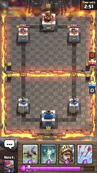
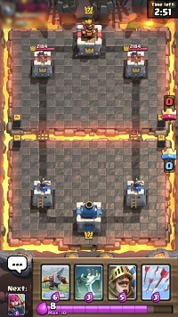

Clash Royale has two main battle modes, 2 player (1v1) and 4 player (2v2). Players are placed in an arena which has an equal number of towers on each side, and the objective is to use your troops and destroy more towers than your opponent before the time limit. If the "King Tower" (middle tower) is destroyed, this awards an instantaneous win to the deserving side. If both players have destroyed an equal number of opposing towers, the game proceeds to overtime, where the player that destroys any tower first wins. If this fails to happen, the game ends in a draw.
In Clash Royale, players are ranked by their number of trophies. Players can earn trophies by defeating other players in real-time multi-player battles. Players can also earn XP from upgrading and donating cards which increases your main level. The maximum level in the game is 13. For an average player, this level would take at least a few years to achieve!
Trophies are won or lost through multiplayer battles, a player wins a battle by destroying more towers than the opponent (each destroyed tower being represented as a 'crown'), or by destroying the opponent's King's Tower, resulting in an automatic "three-crown" victory. As players accumulate more trophies, they progress through the different arenas. There are thirteen playing arenas in total: Goblin Stadium, Bone Pit, Barbarian Bowl, P.E.K.K.A's Playhouse, Spell Valley, Builder's Workshop, Royal Arena, Frozen Peak, Jungle Arena, Hog Mountain, Electro Valley, Spooky Town, and Legendary Arena, with each arena corresponding to a certain trophy count range. A player reaches leagues after reaching 4000 Trophies. Games become progressively difficult as you increase your trophies, since you will face highly skilled and strategic players.
Here is the official game introduction from Supercell, presented by internet famous Clash Royale Youtuber Chief Pat.